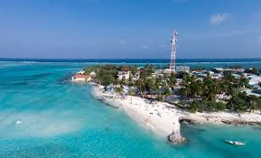
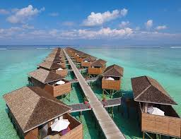
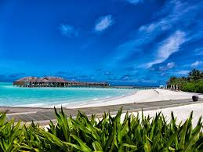
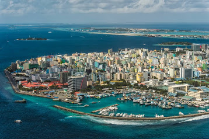
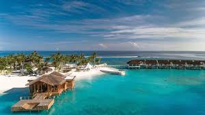

The Maldives , officially the Republic of Maldives, is a small country in South Asia, located in the Arabian Sea of the Indian Ocean. It lies southwest of Sri Lanka and India, about 1,000 kilometres (620 mi) from the Asian continent. The chain of 26 atolls stretches from Ihavandhippolhu Atoll in the north to Addu Atoll in the south. Comprising a territory spanning roughly 298 square kilometres (115 sq mi), the Maldives is one of the world's most geographically dispersed sovereign states as well as the smallest Asian country by land area and population, with around 427,756 inhabitants. Malé is the capital and the most populated city, traditionally called the "King's Island" for its central location. The Maldives archipelago is located on the Chagos-Laccadive Ridge, a vast submarine mountain range in the Indian Ocean, which also forms a terrestrial ecoregion, together with the Chagos Archipelago and Lakshadweep.
MAAFUSHI

As of August 2016 there were more than 55 guest houses in Maafushi[4] and it is the only local inhabited island with most number of guest houses and guest beds in the country. The guest houses provide the island with direct employment, and many other indirect economic benefits to almost every family in the island. Most guest houses are funded by direct investments by local residents of the island. However, recently there have been investments by businessmen in Male' and elsewhere.
Easygoing island for watersports
MEERU ISLAND

Meeru Island (also known as Meerufenfushi) is an island on the easternmost tip of North Malé Atoll (Kaafu Atoll) in the Maldives. It is located South West of Sri Lanka on the equator, some 50 kilometres from the capital Male.
The island is formed above peaks emerging from the depths of the ocean, upon layers of both living and dead coral, and remnants of other marine life. Coconut palms towering above dense shrubs and hardy plants protecting the shores from erosion are natural features. The island is 1200 meters long by 350 meters wide, about 32 hectares. A speedboat transfer from Ibrahim Nasir International Airport is a 55 minute ride.
Meeru Resort is the only resort on Meerufenfushi. There is a choice of restaurants and bars on the island as well as a coffee shop.
Small island and all inclusive resorts
HULHUMALE

Hulhumalé or Hulhulemale is a reclaimed island located in the south of North Male Atoll, Maldives. The artificial island was reclaimed to establish a new land mass required to meet the existing and future housing, industrial and commercial development demands of the Malé region. The official settlement was inaugurated by President Maumoon Abdul Gayoom on May 12, 2004.
The development and management of the island is undertaken by a government-owned corporation called Housing Development Corporation (formerly Hulhumalé Development Unit/Hulhumalé Development Corporation) which was incorporated on March 23, 2005.
Land reclamation has increased the island's area to 4 km2 (1.5 sq mi), making it the fourth largest island in the Maldives.
Founded in 2004, this man-made residential island with a serene feel offers beaches & dive centers.
MALE  Malé is the densely populated capital of the Maldives, an island nation in the Indian Ocean. It's known for its mosques and colorful buildings. The Islamic Centre (Masjid-al-Sultan Muhammad Thakurufaanu Al Auzam) features a mosque, a library and a distinctive gold dome. Near the harbor, a popular fish market offers the day's catch, and a produce market is stocked with local fruit. Majeedhee Magu is a bustling street lined with restaurants and shops. The National Museum, in Sultan Park, showcases regional artifacts like ancient weapons and sultans' thrones. Muliaage, a palace distinguished by its wrought-iron gates, has been the residence of several presidents. Within a gatehouse on the palace grounds lies Medhu Ziyaarai, the resting place of the man believed to have brought Islam to the Maldives. In the north of the island, Hukuru Miskiiy is a 17th-century mosque built of coral stone and housing intricate wood carvings.
GAAFARU  The island is 62.03 km (39 mi; 33 nmi) north of the country's capital, Malé.[2] Gahaafaru Atoll Gahaafaru or Gaafaru (Northern Reef) is a large elliptical reef with only a small inhabited island at its eastern end. This reef has proved disastrous to many vessels. Gaafaru reef is as much a separate atoll as Goifulhafehendhu Atoll or Rasdhukuramathi Atoll which are similar in structure and size. It is separated from Kagi (the northern most island of North Malé Atoll) by a narrow but deep channel - the Gaafaru Kandu. Its lagoon has an average depth of 16 fathoms (30 m) and has no coral patches or shoals in its centre. Gaafaru is a small island surrounded by a big reef.